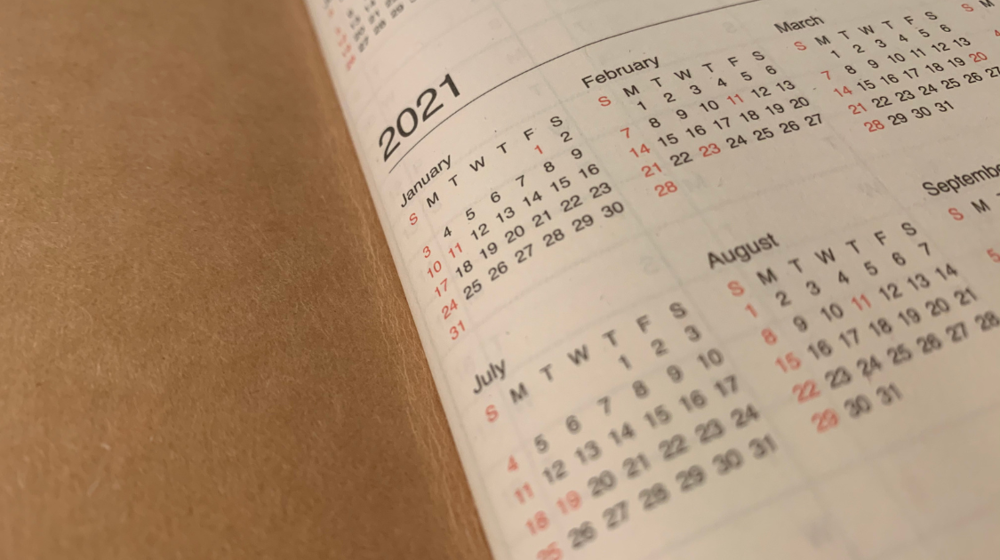

Student Life
A Guide to New Year's Goals
By Lily Nordgren | Published Dec 30, 2020 12:10 p.m. PST

This January 1st many of us will celebrate the end of an overwhelming year, and usher in the new with hope. Along with celebrations, New Year's is a time when resolutions are set with bright visions of personal evolution. These midnight declarations have a reputation for being unattainable and idealistic. Motivation can only take us so far. But goals can be effective as long as they are realistic, personal, and smart.
Before setting New Year's resolutions, determine what is achievable for you. Becoming clear about your habits and personal capacity helps identify goals that are unique to your life. A goal will be achievable if it works with your innate qualities, framing them as assets rather than obstacles. A night owl might decide to read for a few hours every night, and an early bird could resolve to watch the sunrise every morning. Encouraging yourself based on qualities you already have is more motivating than trying to change yourself to fit ideals.
Often, January arrives with a storm of advertisements proclaiming that this exercise machine will completely change your life, that planner makes you five times more productive, and this serum clears your skin in less than a week. The problem with these ads is their manipulation. There is nothing wrong with any body type, energy capacity, or skin type, but many companies play on our insecurities (or invent new ones) to shame us into buying their products for New Year’s goals. This manipulation creates unrealistic goals that aspire to societal ideals, rather than personal aspirations. Often the products do not work as promised, and goals built around them are abandoned. It is helpful to reevaluate what you want to do in the coming year. For example, getting physically active does not require weight loss as a motivator; going for bike rides to explore the city, dancing to a song that makes you happy, even tending to a garden, are uplifting physical activities. Personalizing goals to your circumstances and separating them from marketable insecurities makes resolutions achievable.
SMART goals are set with five guiding principles: specific, measurable, achievable, relevant, and time-based. George Doran created this acronym in 1981. According to the website MindTools, using SMART goal suggestions creates goals that are reachable and personal. Specific goals ask questions like “What resources do I have to achieve this goal?” and “Where can I complete this goal?”. Specific goals address who, what, where, when, and why. Measurable goals plan requirements for completing the goal. For example, someone wanting to run could use a running app to track their progress over time, and decide that they want to run a 10K to complete their goal. Achievable goals are realistic, and identify the possible resources you have to achieve a goal, as well as obstacles that might need to be worked around. Relevant goals are important to you, and support your long-term ambitions. Choosing to run for a goal is not relevant if you dislike running. Goals do not have to push you to do something you do not enjoy, because those will not be relevant to you. Time-based goals have a beginning, middle, and end. They select time during the day that you will work towards your goal. A check-in time halfway through makes sure you are on track. A deadline is a focus that encourages you to complete the goal. This timeline organizes goals into an achievable format. When you are ready to set your goals, it is helpful to write them down. Writing goals down provides a physical record in case you forget about them, and encourages you to remember what you are working toward.
Goal setting helps focus our ambitions, letting us work toward them one step at a time. Goals that are set without planning and purpose may trick us into believing that those ambitions are unrealistic. SMART, personal goals make our ambitions achievable.